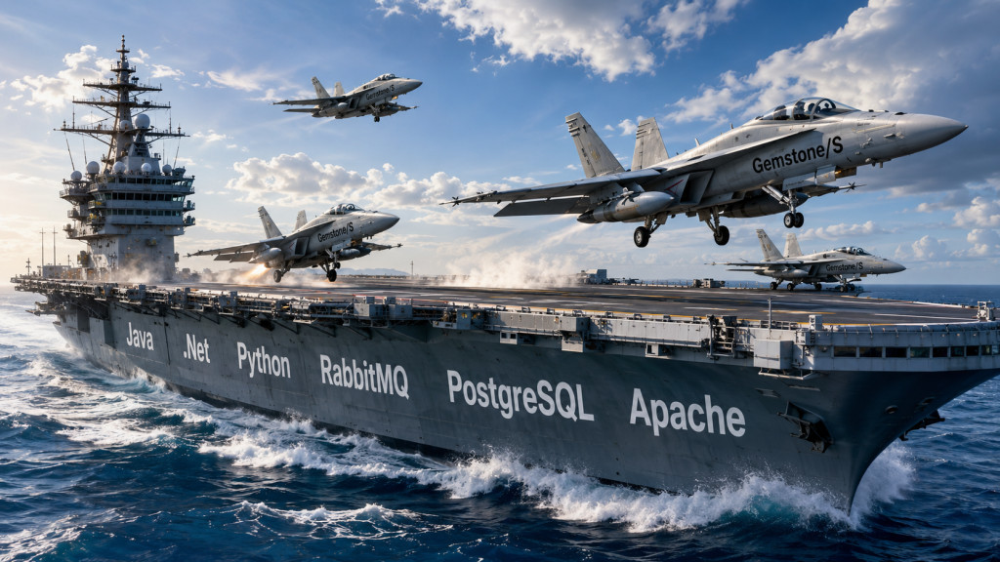

|
<< Click to Display Table of Contents >> Navigation: »No topics above this level« KVM - Gemstone "Carrier" |

Die Nutzung der KVM Infrastruktur wird nur genutzt, um die Lizenzeinschränkungen durch Gemstone/S abzuschwächen. Wir brechen hier keine Lizenzvereinbarungen, aber ermöglichen hiermit, die volle Leistungsbereitschaft der Datenbank auch mit mehreren, gleichzeitig laufenden Anwendung zu erhalten.
KVM is tricky und als Referenz nenne ich hier einige Bücher:
•Mastering KVM Virtualization, 2025 Edition by Bekroundjo Akoley Aristide
Noch einmal: Die Installation von KVM ist nur zu überlegen, wenn man eingeschränkte Lizenzen von Gemstone/S besitzt, die nur auf bestimmten Cores arbeiten - ansonsten lasst es. Alternativen wären vielleicht noch VirtualBox, aber nicht Docker - denn Docker virtualisiert die Cores nicht.
Auf alle Fälle verfolgen wir die folgende Zielsetzung. Auf dem System läuft ein Ubuntu 24.04 Server (Host). Dieser Host beherbergt die folgenden Komponenten:
•Apache als http/https/websocket Gateway - sicherlich kann man auch nginx zum Laufen bekommen
•PostgreSQL-Datenbank (optional - kann aber irgendwo laufen)
•RabbitMQ (optional - kann aber irgendwo laufen)
•Unter /datadisk/kvm/shared/db_data/<vm-name> (im Host) legen die VM ihre Datenbankdateien ab. Es wird angenommen, daß alle Datenbanken in den verschiedenen VMs unterschiedliche Namen haben.
Die Gemstone/S Datenbankanwendungen laufen in virtuellen Maschinen (VM) unter KVM auf dem Host. Als Betriebssystem für die VM wird Debian Trixie (13) oder Ubuntu 22|24|26.04 genommen. Dafür gibt es bereits passende cloud-images bei debian oder ubuntu herunterzuladen.
Diese VMs bekommen einen gesonderten Benutzer "pas", unter dem alles installiert wird. Lokal in der VM werden die Daten unter /datadisk/stones abgelegt. Dieses Verzeichnis wird durchgereicht in das gleichnamige Verzeichnis im hosts. Diese VMs haben ca. 4GB RAM, 10 GB Plattenplatz und bekommen 3-4 CPUs.
Die VMs bekommen als Netzwerk eine Host <-> VM Anbindung für die Kommunikation zwischen Host und den VMs und ein NAT-Anbindung als einzige Kommunikation nach außen.
Die notwendigen Datenstrukturen zum Erstellen der VMs (Name: vm-name) werden unter /datadisk/kvm abgelegt:
•/datadisk/kvm/bases - Basis-Images von Debian, von dem andere Platten gebildet werden
•/datadisk/kvm/seeds/vm-name - hier werden die ISO-Imagesa abgelegt und gebaut, die den Input für eine VM dienen (Konfiguration und Installation)
•/datadisk/kvm/setup/vm-name - setup-Skripte
•/datadisk/kvm/registry/vm-name - hier liegen die Datenbank-Dateien
•/datadisk/kvm/vms/vm-Name - hier liegt das Differenz-Image für die jeweiligen Instanzen